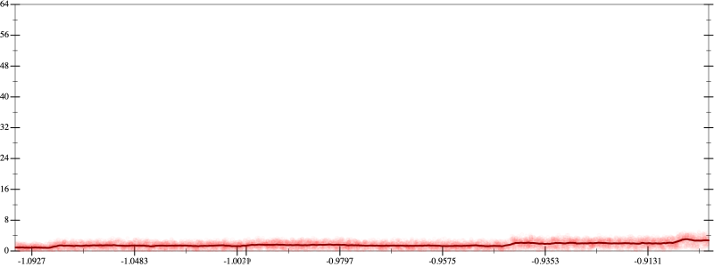
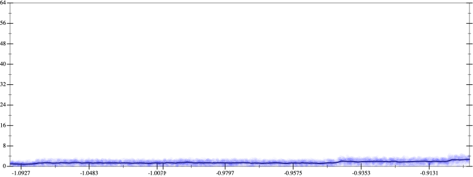
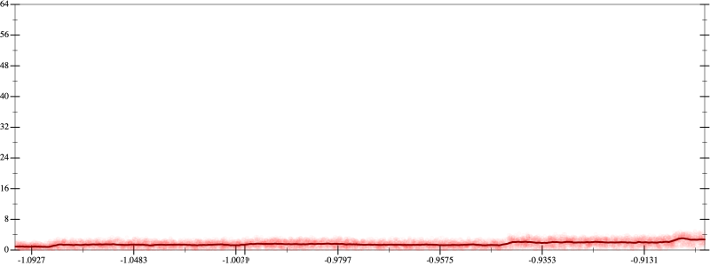
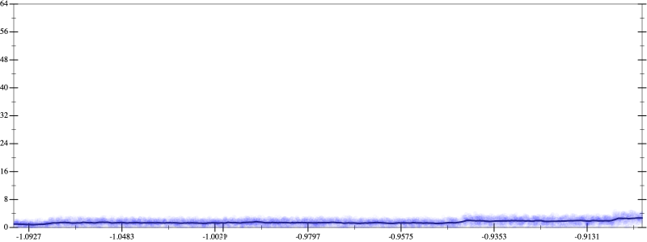

Initial program 1.6
\[\left(0.375 + -3.75 \cdot \left(x \cdot x\right)\right) + 4.375 \cdot \left(\left(\left(x \cdot x\right) \cdot x\right) \cdot x\right)\]
- Using strategy
rm Applied add-log-exp1.6
\[\leadsto \left(0.375 + -3.75 \cdot \left(x \cdot x\right)\right) + \color{blue}{\log \left(e^{4.375 \cdot \left(\left(\left(x \cdot x\right) \cdot x\right) \cdot x\right)}\right)}\]
Applied add-log-exp1.6
\[\leadsto \color{blue}{\log \left(e^{0.375 + -3.75 \cdot \left(x \cdot x\right)}\right)} + \log \left(e^{4.375 \cdot \left(\left(\left(x \cdot x\right) \cdot x\right) \cdot x\right)}\right)\]
Applied sum-log1.6
\[\leadsto \color{blue}{\log \left(e^{0.375 + -3.75 \cdot \left(x \cdot x\right)} \cdot e^{4.375 \cdot \left(\left(\left(x \cdot x\right) \cdot x\right) \cdot x\right)}\right)}\]
- Using strategy
rm Applied exp-prod1.5
\[\leadsto \log \left(e^{0.375 + -3.75 \cdot \left(x \cdot x\right)} \cdot \color{blue}{{\left(e^{4.375}\right)}^{\left(\left(\left(x \cdot x\right) \cdot x\right) \cdot x\right)}}\right)\]
- Using strategy
rm Applied pow11.5
\[\leadsto \log \left(e^{0.375 + -3.75 \cdot \left(x \cdot x\right)} \cdot {\color{blue}{\left({\left(e^{4.375}\right)}^{1}\right)}}^{\left(\left(\left(x \cdot x\right) \cdot x\right) \cdot x\right)}\right)\]
Applied pow-pow1.5
\[\leadsto \log \left(e^{0.375 + -3.75 \cdot \left(x \cdot x\right)} \cdot \color{blue}{{\left(e^{4.375}\right)}^{\left(1 \cdot \left(\left(\left(x \cdot x\right) \cdot x\right) \cdot x\right)\right)}}\right)\]
Applied simplify1.5
\[\leadsto \log \left(e^{0.375 + -3.75 \cdot \left(x \cdot x\right)} \cdot {\left(e^{4.375}\right)}^{\color{blue}{\left(\left(x \cdot x\right) \cdot \left(x \cdot x\right)\right)}}\right)\]
 
